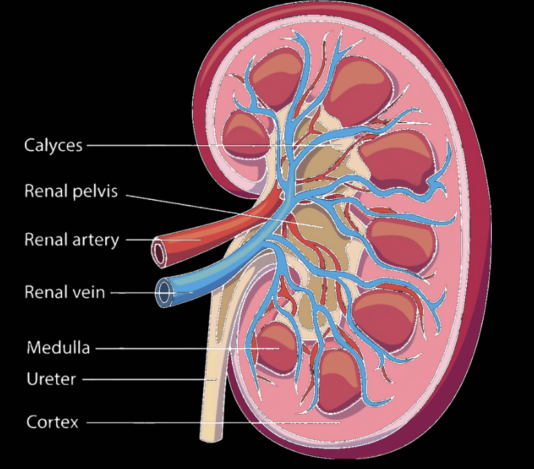
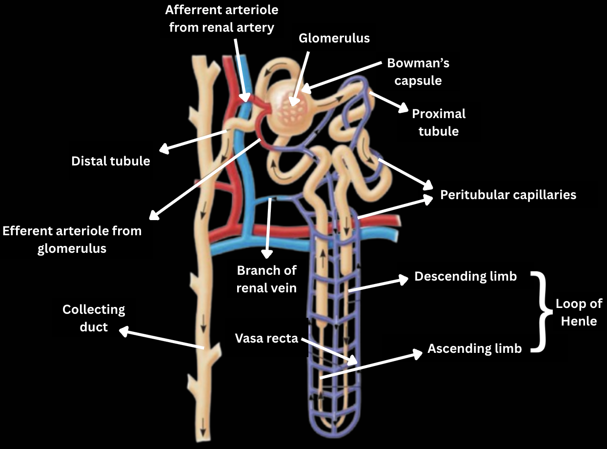

The excretory system is the body's way of removing metabolic waste and toxic substances from circulation. The kidneys are the main organs of this system. They produce urine from filtrate, which travels through the ureters to the bladder and is expelled through the urethra.
Functions:
- Homeostasis(11) - maintaining the correct balance of water, ions, and pH in the body.
- Waste removal - preventing the buildup of toxic substances like urea(19), uric acid(20), and creatinine(6).
- Detoxification - expelling foreign chemicals such as drugs, food additives, and pesticides.
- Gluconeogenesis(10) - producing glucose from non-carbohydrate sources during prolonged fasting.
- Endocrine(7) function - releasing hormones (erythropoietin(8) and 1,25-dihydroxyvitamin D(1)) and enzymes (renin(18)) that regulate blood pressure, red blood cell production, and calcium absorption.
Organs of the excretory system:
- Kidneys - filter blood to remove waste products such as urea, regulate water and salt balance, and maintain pH and blood pressure by producing urine.
- Ureters - transport urine from the kidneys to the urinary bladder through muscular contractions.
- The urinary bladder - temporarily stores urine until the body is ready to excrete it.
- Urethra - carries urine from the bladder to the outside of the body during urination.
Structure of the Kidney
Each of the two kidneys has an outermost renal cortex, a renal medulla and an innermost renal pelvis. The kidneys are supplied with oxygenated blood by the renal artery and drained by the renal vein. The structural units of the kidneys are called nephrons, each consisting of a swelling, otherwise called the renal corpuscle, which contains a ball of capillaries, called the glomerulus, and a long tubule. There are around a million of them in each kidney. 85% of them are called cortical, they are situated primarily in the cortex and only reach a short distance in the medulla; the other 15% are juxtamedullary and extend deep into the medulla - these are the most effective. All the nephrons drain into the renal pelvis via calyces (singular, calyx), from which the urine travels into the bladder through the ureters. The area where the medulla connects to the calyx is called the papilla(16).

Structure of the Nephron
- Bowman's capsule - here, filtrate(9) forms when, due to blood pressure, water and small solutes permeate the walls of capillaries. At this stage the filtrate contains useful substances like glucose and amino acids, and has a similar salt concentration to blood.
- Proximal tubule - here, nutrients and ions are transferred to the interstitial fluid(12) by either active or passive transport. For example, Na+ ions are transported actively, which causes Cl- ions and water to follow passively. A lot of toxins are actively secreted into the filtrate after being processed in the liver. Cells of the transport epithelium secrete both H+ and ammonia, and reabsorb almost all bicarbonate ions(4), stabilising the pH.
- Loop of Henle - here, the filtrate volume decreases significantly. The loop is separated into the descending and ascending limbs.
- The descending limb has many aquaporins but almost no channels for solutes, so to achieve a net negative movement of water and an increase in osmolarity(15) of filtrate, the surrounding interstitial fluid has to be hyperosmotic in comparison to the filtrate. This condition is fulfilled because the interstitial fluid becomes more concentrated deeper into the kidney, creating a gradient that draws water out of the tubule. As the filtrate flows down the descending limb, water keeps leaving the tubule to match the increasing saltiness outside. Filtrate is the most concentrated at the elbow of the loop.
- The ascending limb lacks water channels and has a membrane that is nearly impermeable to water, preventing water from leaving the tubule. This limb is divided into a thin and a thick section. In the thin section, right after the elbow, concentrated NaCl diffuses out of the tubule and is used to keep the osmolarity in the medulla's interstitial fluid. In the thick section, the NaCl diffusion continues. However, the epithelium actively transports NaCl to the interstitial fluid.
- These energy-consuming systems that create concentration gradients are known as countercurrent multiplier systems(5). Although the loop of Henle does not significantly change the final osmolarity of the filtrate, it creates the essential concentration gradient in the medulla that enables water reabsorption later in the collecting duct.
- Distal tubule - here, the concentrations of K+ and NaCl are regulated by varying the amounts of the former secreted and the latter reabsorbed. The distal tubule also contributes to pH stabilisation by secreting H+ and reabsorbing bicarbonate ions.
- Collecting duct - converts filtrate into urine. The collecting duct passes through the same salty medulla gradient created by the loop of Henle. This allows more water to be reabsorbed, especially under the influence of the hormones such as antidiuretic hormone(3) and aldosterone(2). These hormones influence the final concentration of urine by influencing the amount of aquaporins and salt channels in the epithelium and therefore controlling the rate of reabsorption of different substances. Some urea diffuses out of the duct due to its high concentration, helping maintain the osmolarity of the interstitial fluid.
Over its journey through the kidneys, the filtrate volume is reduced by about a hundred times. Under standard conditions, around 1600 litres of blood flow through the kidneys daily, which yields about 180 L of initial filtrate. However, the excreted amount is only 1.5 litres. This shows how efficient the kidneys are at conserving water while removing waste.
Please note that the kidneys are far from the only type of excretory system found in nature. However, it is characteristic of mammals and, therefore, humans. Other excretory systems include protonephridia(17) (found in flatworms), metanephridia(14) (characteristic of annelida) and Malpighian tubules(13) (insects and other terrestrial arthropods).

Glossary:
- 1,25-dihydroxyvitamin D - the active form of vitamin D produced in the kidneys. It increases calcium absorption and supports bone health.
- Aldosterone - a hormone produced by the adrenal glands that increases sodium reabsorption in the kidneys, helping regulate water and salt balance.
- Antidiuretic hormone (ADH) - a hormone produced by the hypothalamus and released by the pituitary gland; it increases water reabsorption in the kidneys and reduces urine volume. Also called vasopressin.
- Bicarbonate ions - negatively charged ions (HCO₃⁻) produced in the body from carbon dioxide; they help buffer blood pH.
- Countercurrent multiplier systems - systems that use energy to generate concentration gradients by moving fluids in opposite directions, enhancing water and solute reabsorption.
- Creatinine - a waste product of muscle metabolism formed from creatine phosphate; commonly used as an indicator of kidney function.
- Endocrine - relating to glands or cells that release hormones into the bloodstream to regulate body functions.
- Erythropoietin - a hormone produced by the kidneys that stimulates red blood cell production in response to low oxygen levels.
- Filtrate - the fluid formed in the renal corpuscle when water and small solutes are filtered from blood into the nephron.
- Gluconeogenesis - the process of synthesizing glucose from non-carbohydrate sources such as amino acids, lactate, and glycerol.
- Homeostasis - the maintenance of stable internal conditions in the body, such as temperature, pH, and ion levels.
- Interstital fluid - the liquid found between cells that helps transport substances and maintain tissue hydration.
- Malpighian tubules - slender, blind-ended tubules at the junction of the midgut and hindgut in insects and other arthropods. They remove nitrogenous waste (mainly uric acid), ions, and water from the hemolymph and release them into the gut for excretion.
- Metanephridia - excretory organs found in annelids; composed of ciliated funnels opening into the coelom and tubules that reabsorb useful substances and excrete waste through an external opening.
- Osmolarity - the total concentration of dissolved particles (solutes) in a solution, measured in osmoles per litre.
Written by Kotryna Mieldažytė